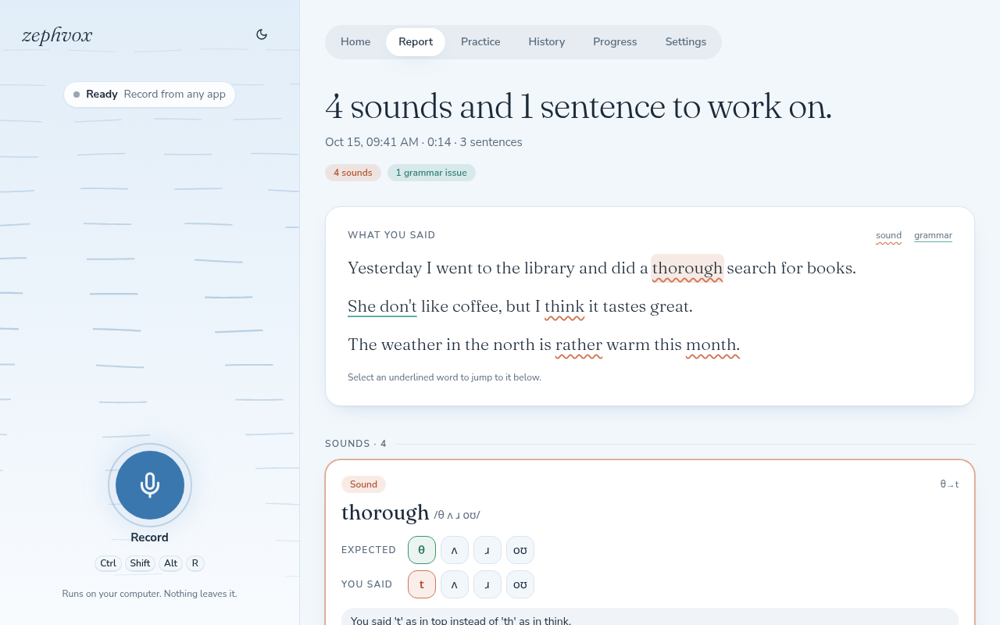

Full app
Everything runs on this computer, and works offline.
- A few GB of disk, 8 GB+ of RAM
- A GPU makes it fast; without one, a lighter profile is used
- Can also share this computer with your other devices
Spoken English coach
zephvox listens while you speak English and shows the sounds and sentences to work on, then lets you practice them until they pass. Everything can run on your own computer, offline.
Free and open source · Linux, macOS and Windows

How it works
Press Ctrl Shift Alt R in any app, talk for a minute or two, and press it again. You don't need the page open.
zephvox transcribes what you said, compares each sound with the dictionary and checks the grammar. That happens on your computer, or on a zephvox server if you'd rather use one.
See each mistake in its sentence, hear it said correctly, and practice the word until it scores as a pass. Your history stays on your computer.
Put the tip of your tongue lightly between your teeth and let the air flow out, with no stop.
Sounds, not just words
Speech apps often just say "try again". zephvox lines up the sounds a word should have against the ones you made, so you can see that the th came out as a t, and what to do with your tongue about it.
What you get
Start and stop from any app. A desktop note tells you when your report is ready.
A dropped or swapped sound shows as a gap or a colored tile, not a vague score.
The sentence you said, the corrected one and a short reason. Mark a false alarm and it's ignored from then on.
Say a word and get a 0–100 score a moment later. It stops listening when you stop talking.
Wind that follows your voice while you record and carries your words through each step.
Your weakest words and the sounds you mix up most, across every recording.
Pick models, drivers, thresholds and shortcut keys in Settings. Changes apply right away, and no config file needs editing.
The full app runs on your computer, and after the install it needs no internet. Nothing is sent anywhere.
Turn on sharing and your other devices, or other people, can analyze with your GPU through a small client.
Setup guide
There are two ways to run it. Most people want the full app.
Everything runs on this computer, and works offline.
A small app that records here and uses a zephvox server to analyze.
One command. It installs uv if you don't have it, downloads zephvox into ~/zephvox%LOCALAPPDATA%\zephvox and starts the setup.
curl -LsSf https://raw.githubusercontent.com/dipoahmed018/zephvox/main/install.sh | shpowershell -ExecutionPolicy ByPass -c "irm https://raw.githubusercontent.com/dipoahmed018/zephvox/main/install.ps1 | iex"Run it in a terminal (PowerShell on Windows). Nothing else needs a system install.
The setup looks at your computer and recommends a profile. You mostly press Enter. It:
| Profile | Recommended for | Speech to text | Grammar |
|---|---|---|---|
large | GPU with 16 GB+ (Mac: 32 GB+) | Whisper large-v3-turbo | qwen3:14b |
standard | GPU with 10–16 GB (Mac: 16 GB+) | Whisper large-v3-turbo | qwen3:8b |
small | GPU with 6–10 GB (Mac: 8 GB) | Whisper large-v3-turbo | qwen3:4b |
cpu | no usable GPU, 16 GB+ RAM | Whisper small.en | qwen3:4b (slow) |
cpu-light | under 16 GB RAM | Whisper base.en | off |
custom | your own choices | any size, any model, an API, or none | |
You can switch profile later in Settings, and the setup is safe to run again.
Open zephvox from your app menu, or run it from a terminal:
zephvox serve --openThe page opens at http://127.0.0.1:8765. Press Ctrl Shift Alt R, talk, and press it again. Your report opens when it's ready.
zephvox serve --open | start zephvox (or use the app menu) |
zephvox setup | review the profile or repair the install (--dry-run only shows the plan) |
zephvox update | install the latest release, keeping your settings |
zephvox uninstall | remove it, asking before deleting models or your recordings |
zephvox doctor | print what it found on this computer, for troubleshooting |
Unattended: add --profile cpu --yes to the installer command (on Windows, set $env:ZEPHVOX_SETUP_ARGS = "--profile cpu --yes" first).
You need a zephvox server's address and an invite code. Ask whoever runs the server, or make your own from a full install. A code works once, for one device, and expires after a few days.
Put in the server's address and your code.
curl -LsSf https://raw.githubusercontent.com/dipoahmed018/zephvox/main/install.sh | sh -s -- \
--server-url https://speak.example.com --invite inv_...$env:ZEPHVOX_SETUP_ARGS = "--server-url https://speak.example.com --invite inv_..."
irm https://raw.githubusercontent.com/dipoahmed018/zephvox/main/install.ps1 | iexIt installs the small client (about 80 MB), connects it to the server and adds it to your app menu.
Open zephvox from your app menu and press Ctrl Shift Alt R. Recordings and reports stay on your computer; only the analysis runs on the server. If the server can't be reached, recordings wait and are analyzed when it's back.
Already installed the client and have an invite now? In the app: Settings → Where analysis runs → A server.
Privacy
Once installed, it needs no internet. Recordings, models and reports all stay on your computer.
Recordings go to the one server you connected, and nowhere else. The app warns you if its address isn't encrypted.
Reports and practice scores live on your computer. Backing them up to a server is a switch in Settings, off unless you turn it on.
zephvox is free software under the AGPL-3.0. You can read exactly what it does with your audio.
Troubleshooting
Running zephvox doctor prints what zephvox found on your computer, which helps with most of these.
Still stuck? Open an issue and include the output of zephvox doctor.
The grammar model isn't downloaded yet. Open Settings → Models & checks → Grammar and press Download, or run ollama pull qwen3:8b (use the model name shown there). Pronunciation still works in the meantime.
Check Settings → General → Shortcuts: it should say Active. On Linux, run zephvox desktop-entry once and allow the shortcuts when your desktop asks. On macOS, allow zephvox under Privacy & Security → Accessibility. Make sure only one copy of zephvox is running. You can always bind zephvox toggle in your system's own keyboard settings.
NVIDIA needs the normal driver, version 525 or newer; no CUDA toolkit. On AMD with Linux, your user must be in the render and video groups (the setup tells you), and some cards need an HSA_OVERRIDE_GFX_VERSION value, which the setup offers. AMD and Intel GPUs on Windows aren't supported by PyTorch, so the CPU profiles are used.
Choose it under Settings → General → Microphone. On macOS and Windows, allow microphone access for the terminal or app that started zephvox.
Check the address (it should start with https:// unless the server is on the same computer) and that the invite hasn't been used or expired; ask for a new one if so. Servers that aren't on your own network need HTTPS in front of them.
You're probably on a CPU profile. A smaller speech model and turning off grammar help, or use a server with a GPU. The profile can be changed any time in Settings.
Questions
The full app, unless you already have a zephvox server or a stronger machine on your network. It's simpler, private, and works offline. The client is for when you'd rather not run the models on this computer.
No. With a GPU the analysis takes seconds; on a CPU it's slower, and the setup picks a lighter profile for you. A client install needs no GPU at all.
Several GB: PyTorch and the speech models dominate. The setup tells you the exact sizes and checks your disk before downloading anything, and asks first.
From whoever runs the server you're meant to use, or from your own full install: Settings → Sharing.
Yes. Settings → Where analysis runs switches between this computer and a server. On a client install, choosing this computer offers to install the speech models.
Settings → General → Shortcuts: click Change and press the new keys.
Standard American English by default, or British English with a custom profile. Some findings are accent rather than mistakes, and you can mark those as "not a mistake".
Run zephvox uninstall. It asks before deleting the models or your recordings.